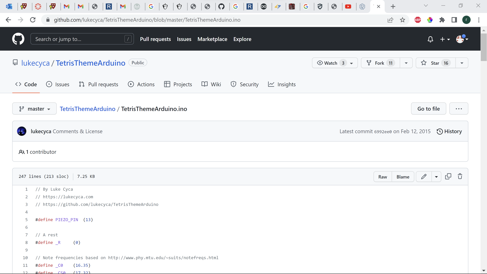
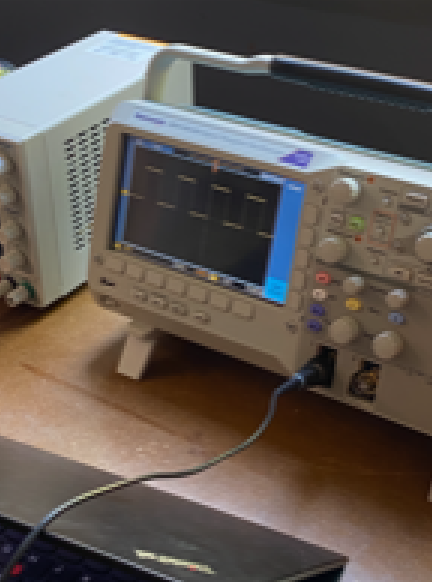

Even though this was an output devices project, I decided to use a potentiometer as my required input device being that I had never used one before.
I wired up the potentiometer and began writing a first program
I made a basic program that would make a trigger whenever the potentiometer was turned more than halfway (500)
After that I used this github to get a buzzer file for tetris
Then while playing that buzzerfile triggered from the potentiometer I analised the sound with the ossisiscope
Buzzer music Then I decided to try for a different song because the tetris theme was far too long to do any tests on, so I setteled on "happy birthday" which a video can be found here
Buzzer code If you are interested in the code it can be found here, although heres a portion included
void loop() {
Serial.println(analogRead(POTENTIOMETER_PIN));
if (POTENTIOMETER_PIN > 500) { // button is pressed
Serial.println("potentiometer is larger than 500");
buzzer();
}
}
void buzzer() {
bclass ob1;
// iterate over the notes of the melody:
int size = sizeof(noteDurations) / sizeof(int);
for (int thisNote = 0; thisNote < size; thisNote++) {
// to calculate the note duration, take one second divided by the note type.
//e.g. quarter note = 1000 / 4, eighth note = 1000/8, etc.
int noteDuration = 1000 / noteDurations[thisNote];
tone(BUZZER_PIN, melody[thisNote], noteDuration);
// to distinguish the notes, set a minimum time between them.
// the note's duration + 30% seems to work well:
int pauseBetweenNotes = noteDuration * 1.30;
delay(pauseBetweenNotes);
// stop the tone playing:
noTone(BUZZER_PIN);
For my CNC file I really wanted to mill out and cast my face, not my whole head because I know the CNC cant do that, just the front part of the face